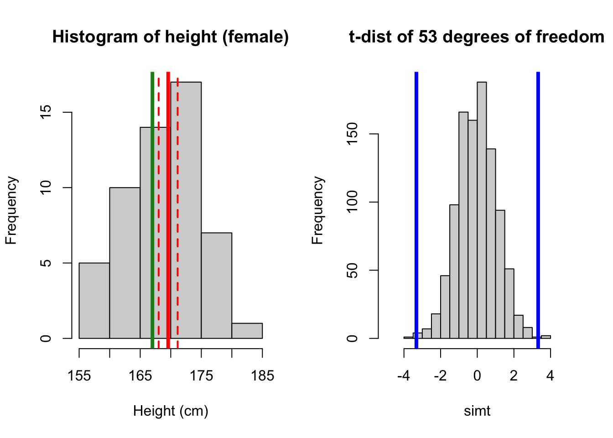
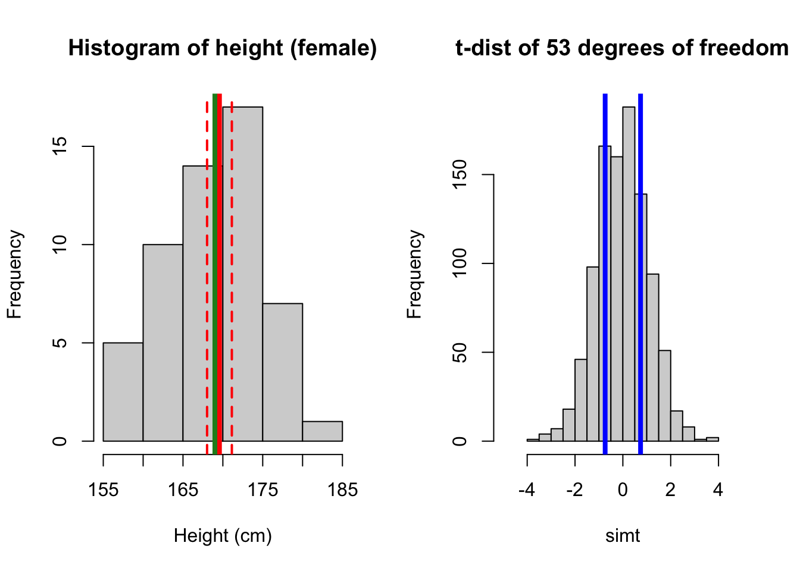
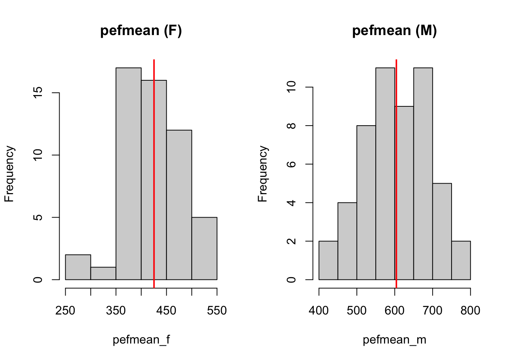

# one sample (default tests against 0, conf.level 0.95)
t.test(x)
# one sample
t.test(x, mu = your_value, conf.level = 0.95)
# paired samples
t.test(x1, x2, paired = T, conf.level = 0.95)
t.test(x1-x2, conf.level = 0.95) # equivalent to one sample
# two independent samples
t.test(x, y, conf.level = 0.95)
# check normal assumption
qqnorm(x)
qqline(x)Statistical inference, t-test
Hypothesis testing, confidence interval, comparing continous variables
Datasets
- Exercise 1: no data needed, we type in data directly.
- Exercise 2:
PEFH98-english(rda link, csv link)
Short summary
Properties of the sample mean
The sample mean of a continuous variable \(X\) is defined as
\(\bar{X} = \frac{\sum_{i=1}^n X_i}{n}\).
- Expectation of the sample mean: \(E(\bar{X}) = \mu\)
- Variance of the sample mean: \(Var(\bar{X}) = \frac{\sigma^2}{n}\)
- Standard error (standard deviation of the sample mean): \(\frac{\sigma}{\sqrt{n}}\)
The distribution of the sample mean: \(\bar{X} \sim N(\mu, \frac{\sigma}{\sqrt{n}})\)
Population vs sample
Note that \(\sigma\) and \(\mu\) are parameters for the population: which are unknown in practice! That is why we need to estimate them based on samples we have collected.
Confidence interval for sample mean
Known population standard deviation (sd)
When the population standard deviation \(\sigma\) (or variance \(\sigma^2\)) is known, \(\frac{\bar{X} - \mu}{\sigma/\sqrt{n}} \sim N(0,1)\)
95% confidence interval for the sample mean \(\bar{X}\) is
\((\bar{X} - 1.96 \times \frac{\sigma}{\sqrt{n}}, \bar{X} + 1.96 \times \frac{\sigma}{\sqrt{n}})\)
Unknown sd: use empirical sd and t-distribution
However, in practice it’s hard to know \(\sigma\) because we do not measure every subject in the population. Instead, we replace \(\sigma\) with the empirical standard deviation \(s\). Instead of normal distribution, this quantity is Student t-distributed with \(n-1\) degrees of freedom:
\(\frac{\bar{X} - \mu}{s/\sqrt{n}} \sim t_{n-1}\)
The more samples you have (i.e. \(n\) becomes larger), the closer t-distribution is to the standard normal distribution \(N(0,1)\).
95% confidence interval for the sample mean \(\bar{X}\) is then
\((\bar{X} - t' \times \frac{s}{\sqrt{n}}, \bar{X} + t' \times \frac{s}{\sqrt{n}})\)
Quantile for t-distribution using R
For 0.05 significance level (95% confidence interval), you can find different values of \(t'\) using R by qt(p = 0.975, df = n-1). For example, \(t' = 2.09\) when your sample size is 20, and \(t' = 1.97\) when your sample size is 200 (close to normal distribution: 1.96).
Hypothesis testing for sample mean
One sample t-test: tests whether sample mean equals to a certain value.
t-test for paired samples: can be transformed into a one-sample t-test, by taking the differences between each pair.
t-test for two independent samples: tests whether the sample means for two groups equal.
Assumptions
- Independent individuals
- Sample mean is normally distributed
- either observations are normally distributed
- or large sample so that averages become normally distributed
For t-test of two independent samples, in addition to above:
- Equality of population standard deviation for both samples
- if not: Welch test or Fisher-Behrens test
Exercise 1 (heart)
The weight of the hearts of 20 men with age between 25 and 55 years have been evaluated, and is given below (in ounces, 1 ounce = 28g)
11.50 14.75 13.75 10.50 14.75 13.50 10.75 9.50 11.75 12.00
10.50 11.75 10.00 14.50 12.00 11.00 14.00 15.00 11.50 10.251a)
Create a variable in R, and enter the data. Compute the mean weight of the hearts based on the formula; then verify it with R function.
Formula: mean
The mean of data \(X = (x_1, x_2, ... x_n)\), \(\bar{x} = \frac{1}{n}\sum_{i = 1}^N x_i\)
1b)
Go through the procedure of computing the 95% confidence interval for the sample mean from the formula. Verify the computed confidence interval with R function t.test(heart).
Formula: confidence interval for the mean
95% confidence interval for the sample mean \(\bar{X}\) is
\((\bar{X} - t' \times \frac{s}{\sqrt{n}}, \bar{X} + t' \times \frac{s}{\sqrt{n}})\)
where \(s\) is the (empirical) standard deviation, \(s^2 = \frac{\sum_{i=1}^n (X_i - \bar{X})^2}{n-1}\)
(\(t' = 2.09\) for \(n = 20\))
# sample size n of this data
n <- 20 # length(heart)
# 1. compute (empirical) standard deviation
# formula (sd): sqrt(1/(n-1) * (sum(xi - xbar)^2))
sqrt(1/(n-1) * (sum((heart - mean(heart))^2))) # be careful with brackets
# alternatively, use sd() function. these two numbers should match
sd(heart) # 1.779
# 2. 95% CI (quantile from t-distribution)
# formula: CI = xbar +- t(n-1, alpha/2) * sd/sqrt(n)
# translate into format R can understand:
t025 <- qt(p = 0.025, df = n-1) # -2.09
t975 <- qt(p = 0.975, df = n-1) # 2.09
c(t025, t975) # symmetric around 0, so can pick any one
# plug in the formula
ci_lower <- mean(heart) - t975 * sd(heart)/sqrt(n)
ci_upper <- mean(heart) + t975 * sd(heart)/sqrt(n)
c(ci_lower, ci_upper)
# verify by doing a one-sample t-test
# by default, it tests whether mean is 0
t.test(heart)1c)
We would like to know whether the mean heart weight is equal to 11 and 11.5.
Before you carry out hypothesis tests, you can gain useful insight by visualization. You can try to use histogram, Q-Q plot and boxplot, and compare the mean heart weight with 11 and 11.5.
What can you conclude?
1d)
Formulate hypothesis tests. Decide whether you need one-sided or two-sided test, and state your conclusion (with p-values and confidence intervals).
Exercise 2 (lung function)
Lung function has been measured on 106 medical students. Peak expiratory flow rate (PEF, measured in liters per minute) was measured three times in a sittinng position, and three times in a standing position.
The variables are
- Age (years)
- Gender (1 is female, 2 is male)
- Height (cm)
- Weight (kg)
- PEF measured three times in a sitting position (pefsit1, pefsit2, pefsit3)
- PEF measured three times in a standing position (pefsta1, pefsta2, pefsta3)
- Mean of the three measurements made in a sitting position (pefsitm)
- Mean of the three measurements made in a standing position (pefstam)
- Mean of all six PEF values (pefmean)
Lung function data
This is the same dataset we have used in EDA (part I) from two days ago. You can use either PEFH98-english.rda, or PEFH98-english.csv data.
If you forgot how to load the data, you can refresh your knowledge by reading these notes (Example 2)
2a)
Open PEFH98-english (in either csv or rda format) into R.
Determine the mean height for females. Calculate the standard deviation and a 95% confidence interval.
Do the same for males.
2b)
Assume that the average height for female students a few years ago was 167 cm. Does the height in the present material differ significantly? Is it significantly different from 169cm?
Formulate a null hypothesis, calculate a test statistic and p-value. Interpret your results.
2c)
Do the values pefsit1 and pefsit2 differ significantly? Calculate a test statistic, the mean difference, and the 95% confidence interval, and formulate a conclusion. Interpret the results.
2d)
Carry out a t-test to decide whether pefsitm annd pefstam are significantly different.
2e)
Are the assumptions of the previous test reasonably fulfilled?
You should check that the difference between pefsitm and pefstam is normally distributed.
Expand to read hint
You can create a new variable called difference by difference <- pefsitm - pefstam, then check the normality of difference by looking at histogram (hist(difference)), or QQ plot (qnorm difference)
2f)
Carry out a t-test to evaluate whether pefmean is significantly different for men and women.
Interpret the results, and formulate a conclusion including p-value and confidence interval.
2g)
Are the assumptions fulfilled in the previous test (pefmean vs gender)?
Solution
Exercise 1 (heart data)
The weight of the hearts of 20 men with age between 25 and 55 years have been evaluated, and is given below (in ounces, 1 ounce = 28g)
11.50 14.75 13.75 10.50 14.75 13.50 10.75 9.50 11.75 12.00
10.50 11.75 10.00 14.50 12.00 11.00 14.00 15.00 11.50 10.251a)
Create a variable in R, and enter the data. Compute the mean weight of the hearts based on the formula; then verify it with R function.
Formula: mean
The mean of data \(X = (x_1, x_2, ... x_n)\), \(\bar{x} = \frac{1}{n}\sum_{i = 1}^N x_i\)
# enter the data
heart <- c(11.5, 14.75, 13.75, 10.5, 14.75,
13.5, 10.75, 9.5, 11.75, 12,
10.5, 11.75, 10, 14.5, 12,
11, 14, 15, 11.5, 10.25)You can either compute the sample mean by summing each data point, and divide by sample size; or use R command mean().
# compute the mean
sum_heart <- 11.5 + 14.75 + 13.75 + 10.5 + 14.75 +
13.5 + 10.75 + 9.5 + 11.75 + 12 +
10.5 + 11.75 + 10 + 14.5 + 12 +
11 + 14 + 15 + 11.5 + 10.25
# this is the sum
sum_heart[1] 243.25# sample size: 20
n <- 20
# if we do not know the size, can find out with length(heart)
sum_heart/n[1] 12.1625# formula: sum(heart)/length(heart)
mean(heart) # should be the same as above[1] 12.16251b)
Go through the procedure of computing the 95% confidence interval for the sample mean from the formula. Verify the computed confidence interval with R function t.test(heart).
Formula: confidence interval for the mean
95% confidence interval for the sample mean \(\bar{X}\) is
\((\bar{X} - t' \times \frac{s}{\sqrt{n}}, \bar{X} + t' \times \frac{s}{\sqrt{n}})\)
where \(s\) is the (empirical) standard deviation, \(s^2 = \frac{\sum_{i=1}^n (X_i - \bar{X})^2}{n-1}\)
(\(t' = 2.09\) for \(n = 20\))
# sample size n of this data
n <- 20 # length(heart)
# 1. compute (empirical) standard deviation
# formula (sd): sqrt(1/(n-1) * (sum(xi - xbar)^2))
sqrt(1/(n-1) * (sum((heart - mean(heart))^2))) # be careful with brackets[1] 1.779405# alternatively, use sd() function. these two numbers should match
sd(heart) # 1.779[1] 1.779405# 2. 95% CI (quantile from t-distribution)
# formula: CI = xbar +- t(n-1, alpha/2) * sd/sqrt(n)
# translate into format R can understand:
t025 <- qt(p = 0.025, df = n-1) # -2.09
t975 <- qt(p = 0.975, df = n-1) # 2.09
c(t025, t975) # symmetric around 0, so can pick any one[1] -2.093024 2.093024# plug in the formula
ci_lower <- mean(heart) - t975 * sd(heart)/sqrt(n)
ci_upper <- mean(heart) + t975 * sd(heart)/sqrt(n)
c(ci_lower, ci_upper)[1] 11.32971 12.99529# verify by doing a one-sample t-test
# by default, it tests whether mean is 0
t.test(heart)
One Sample t-test
data: heart
t = 30.568, df = 19, p-value < 2.2e-16
alternative hypothesis: true mean is not equal to 0
95 percent confidence interval:
11.32971 12.99529
sample estimates:
mean of x
12.1625 1c)
We would like to know whether the mean heart weight is equal to 11 and 11.5.
Before you carry out hypothesis tests, you can gain useful insight by visualization. You can try to use histogram, Q-Q plot and boxplot, and compare the mean heart weight with 11 and 11.5.
What can you conclude?
par(mfrow = c(1, 2)) # this code puts two plots side by side
# histogram
hist(heart, breaks = 10, main = 'Histogram of heart data')
abline(v = mean(heart), col = 'red', lwd = 2)
abline(v = c(ci_lower, ci_upper), col = 'red', lwd = 2,
lty = 'dashed')
# qqplot
qqnorm(heart, pch = 20)
qqline(heart, lwd = 2)
# boxplot
par(mfrow = c(1, 2))
# compare with 11
boxplot(heart, horizontal = T, main = 'Compare with mean = 11')
abline(v = mean(heart), col = 'red', lwd = 3)
abline(v = c(ci_lower, ci_upper), col = 'red', lwd = 2,
lty = 'dashed')
abline(v = 11, col = 'forestgreen', lwd = 3)
# compare with 11.5
boxplot(heart, horizontal = T, main = 'Compare with mean = 11.5')
abline(v = mean(heart), col = 'red', lwd = 3)
abline(v = c(ci_lower, ci_upper), col = 'red', lwd = 2,
lty = 'dashed')
abline(v = 11.5, col = 'forestgreen', lwd = 3)
1d)
Formulate hypothesis tests. Decide whether you need one-sided or two-sided test, and state your conclusion (with p-values and confidence intervals).
# H0: mu = 11; H1: mu != 11
t.test(heart, mu = 11, conf.level = 0.95)
One Sample t-test
data: heart
t = 2.9217, df = 19, p-value = 0.008751
alternative hypothesis: true mean is not equal to 11
95 percent confidence interval:
11.32971 12.99529
sample estimates:
mean of x
12.1625 # H0: mu = 11.5; H1: mu != 11.5
t.test(heart, mu = 11.5, conf.level = 0.95)
One Sample t-test
data: heart
t = 1.665, df = 19, p-value = 0.1123
alternative hypothesis: true mean is not equal to 11.5
95 percent confidence interval:
11.32971 12.99529
sample estimates:
mean of x
12.1625 Exercise 2 (lung function)
Lung function has been measured on 106 medical students. Peak expiratory flow rate (PEF, measured in liters per minute) was measured three times in a sittinng position, and three times in a standing position.
The variables are
- Age (years)
- Gender (female, male)
- Height (cm)
- Weight (kg)
- PEF measured three times in a sitting position (pefsit1, pefsit2, pefsit3)
- PEF measured three times in a standing position (pefsta1, pefsta2, pefsta3)
- Mean of the three measurements made in a sitting position (pefsitm)
- Mean of the three measurements made in a standing position (pefstam)
- Mean of all six PEF values (pefmean)
Lung function data
This is the same dataset we have used in EDA (part I) from two days ago. You can use either PEFH98-english.rda, or PEFH98-english.csv data.
If you forgot how to load the data, you can refresh your knowledge by reading these notes (Example 2)
2a)
Open PEFH98-english (in either csv or rda format) into R.
Determine the mean height for females. Calculate the standard deviation and a 95% confidence interval.
Do the same for males.
# if you use rda data file:
# load('./lab/data/PEFH98-english.rda')
# if you use csv:
lung_data <- read.csv('data/PEFH98-english.csv', sep = ',')
head(lung_data) age gender height weight pefsit1 pefsit2 pefsit3 pefsta1 pefsta2 pefsta3
1 20 female 165 50 400 400 410 410 410 400
2 20 male 185 75 480 460 510 520 500 480
3 21 male 178 70 490 540 560 470 500 470
4 21 male 179 74 520 530 540 480 510 500
5 20 male 196 95 740 750 750 700 710 700
6 20 male 189 83 600 575 600 600 600 640
pefsitm pefstam pefmean
1 403.3333 406.6667 405.0000
2 483.3333 500.0000 491.6667
3 530.0000 480.0000 505.0000
4 530.0000 496.6667 513.3333
5 746.6667 703.3333 725.0000
6 591.6667 613.3333 602.5000# we can focus on height and gender variable only
head(lung_data[, c('height', 'gender')], 10) height gender
1 165 female
2 185 male
3 178 male
4 179 male
5 196 male
6 189 male
7 173 male
8 196 male
9 173 female
10 173 femaleNow we need to separate the height data for based on gender. First, we do it for gender == 'female'.
# for convenience, we create a variable names 'gender'
gender <- lung_data$gender
# height for female
height_f <- lung_data$height[gender == 'female']You should always check whether your newly created variable is correct: for example, you can compare the first several values of height_f with the original data, to see if it is really only selecting height for females.
Another useful thing to do is to check how many data poinnts have been selected.
# check the first few values, is it only selecting female heights?
head(height_f)[1] 165 173 173 169 170 172# number of females
nf <- length(height_f) # 54
nf[1] 54Now we can compute the mean and confidence interval on the newly created variable, height_f.
mean(height_f) # 169.57[1] 169.5741sd(height_f) # 5.69[1] 5.692106# se_f <- sd(height_f)/sqrt(54) 0.774
# quantile for t distribution: pay attention to df!
t975 <- qt(p = 0.975, df = nf-1) # 2.005
# 95% CI
ci_upper_f <- mean(height_f) + t975 * sd(height_f)/sqrt(nf) # 171.1277
ci_lower_f <- mean(height_f) - t975 * sd(height_f)/sqrt(nf) # 168.0204
c(ci_lower_f, ci_upper_f)[1] 168.0204 171.1277# double check by running a t.test
t.test(height_f)
One Sample t-test
data: height_f
t = 218.92, df = 53, p-value < 2.2e-16
alternative hypothesis: true mean is not equal to 0
95 percent confidence interval:
168.0204 171.1277
sample estimates:
mean of x
169.5741 Based on our calculation, the mean height for females is 169.57 cm (95% confidence interval (168.02, 171.13)).
For gender == 'male', we can do the same thing. Pay attention to the different degrees of freedom, because the sample size has changed.
# height for male
height_m <- lung_data$height[gender == 'male']
# number of males
nm <- length(height_m) # 52
mean(height_m) # 181.87[1] 181.8654sd(height_m) # 5.67[1] 5.667343# se_m <- sd(height_m)/sqrt(52) # 0.786
# find quantile for males (pay attention to df)
t975 <- qt(p = 0.975, df = nm-1) # 2.007
# 95% CI
ci_upper_m <- mean(height_m) + t975 * sd(height_m)/sqrt(nm) # 183.44
ci_lower_m <- mean(height_m) - t975 * sd(height_m)/sqrt(nm) # 180.28
c(ci_lower_m, ci_upper_m)[1] 180.2876 183.4432# verify by t.test
t.test(height_m)
One Sample t-test
data: height_m
t = 231.4, df = 51, p-value < 2.2e-16
alternative hypothesis: true mean is not equal to 0
95 percent confidence interval:
180.2876 183.4432
sample estimates:
mean of x
181.8654 Based on our calculation, the mean height for males is 181.87 cm (95% confidence interval (180.28, 183.44)).
2b)
Assume that the average height for female students a few years ago was 167 cm. Does the height in the present material differ significantly? Is it significantly different from 169cm?
Formulate a null hypothesis, calculate a test statistic and p-value. Interpret the results.
Let \(\mu_F\) indicate the average height for the female students. We test the hypothesis
\(H_0: \mu_F = 167\) against \(H_a: \mu_F \neq 167\) (two sided test).
# use t.test command
t.test(height_f, mu = 167)
One Sample t-test
data: height_f
t = 3.3231, df = 53, p-value = 0.001619
alternative hypothesis: true mean is not equal to 167
95 percent confidence interval:
168.0204 171.1277
sample estimates:
mean of x
169.5741 We can conclude that the average height for female students differ significantly from 167 (p = 0.0016). We reject the null hypothesis.
If you want to verify the p-value by hand: follow the procedure below.
# (optional) calculate from the formula
t_stat <- (mean(height_f) - 167)/(sd(height_f)/sqrt(nf))
t_stat # 3.323[1] 3.323112# compare this with t distribution with nf-1 degrees of freedom
pval_twosided <- pt(q = t_stat, df = nf-1, lower.tail = F)*2
pval_twosided[1] 0.001618751Now we compare with 169 cm.
t.test(height_f, mu = 169)
One Sample t-test
data: height_f
t = 0.74113, df = 53, p-value = 0.4619
alternative hypothesis: true mean is not equal to 169
95 percent confidence interval:
168.0204 171.1277
sample estimates:
mean of x
169.5741 # verify p-val (optional)
t_stat <- (mean(height_f) - 169)/(sd(height_f)/sqrt(nf))
t_stat [1] 0.7411256# compare this with t distribution with nf-1 degrees of freedom
pval_twosided <- pt(q = t_stat, df = nf-1, lower.tail = F)*2
pval_twosided[1] 0.4618885We can go one step further by visualizing the two scenarios. First we compare with 167 cm, where there were a significant difference. Dashed lines are confidence interval. The blue lines in the t-distribution histogram indicate the location for the t-statistic, and (two-sided) p-value is the probability beyond these two lines - greater than 3.32, and smaller than -3.32.
Show code
par(mfrow = c(1,2))
# plot 1: 167
hist(height_f, main = 'Histogram of height (female)', xlab = 'Height (cm)')
abline(v = mean(height_f), lwd = 4, col = 'red')
abline(v = 167, lwd = 4, col = 'forestgreen')
# add CI on top of the plot
abline(v = ci_lower_f, lwd = 2, col = 'red', lty = 'dashed')
abline(v = ci_upper_f, lwd = 2, col = 'red', lty = 'dashed')
# plot 1t
simt <- rt(1000, df =nf-1) # make 1000 t random variables
hist(simt, xlim = c(-5, 5), main = 't-dist of 53 degrees of freedom')
abline(v = 3.323, lwd = 4, col = 'blue')
abline(v = -3.323, lwd = 4, col = 'blue')
Now compare with 169 cm.
Show code
par(mfrow = c(1,2))
# plot 2: 169
hist(height_f, main = 'Histogram of height (female)', xlab = 'Height (cm)')
abline(v = mean(height_f), lwd = 4, col = 'red')
abline(v = 169, lwd = 4, col = 'forestgreen')
# add CI on top of the plot
abline(v = ci_lower_f, lwd = 2, col = 'red', lty = 'dashed')
abline(v = ci_upper_f, lwd = 2, col = 'red', lty = 'dashed')
# plot 2t
hist(simt, xlim = c(-5, 5), main = 't-dist of 53 degrees of freedom')
abline(v = 0.74, lwd = 4, col = 'blue')
abline(v = -0.74, lwd = 4, col = 'blue')
2c)
Do the values pefsit1 and pefsit2 differ significantly? Calculate a test statistic, the mean difference, and the 95% confidence interval, and formulate a conclusion. Interpret the results.
Here we use paired t-test, because these two measurements are on the same subject.
Missing data in
pefsit2
When you run mean(lung_data$pefsit2), it might return NA as a result. This is caused by missing values in this variable. You can check this from the data (click on lung_data in your environment)(row 66)
This does not affect t.test() as it will remove NA automatically. However this might affect other functions, such as mean().
You can do mean(pefsit2, na.rm = T) (remove NA). This does not remove NA from your data forever; but only for your mean computation.
You should check whether there are NA in your data. One option is summary(pefsit2).
pefsit1 <- lung_data$pefsit1
pefsit2 <- lung_data$pefsit2
# hist(pefsit1)
# hist(pefsit2)
# compute mean:
mean(pefsit1)[1] 504.6038mean(pefsit2) # this returns NA, bec subject 66 has missing data[1] NAlung_data[66, ] age gender height weight pefsit1 pefsit2 pefsit3 pefsta1 pefsta2 pefsta3
66 19 female 166 56 450 NA NA NA 425 NA
pefsitm pefstam pefmean
66 NA NA NA# to remove this when computing mean by mean():
mean(pefsit2, na.rm = T) # remove NA when computing mean[1] 509.5238# (how to check if my data has NA: is.na(pefsit2); summary(pefsit2))
summary(pefsit2) Min. 1st Qu. Median Mean 3rd Qu. Max. NA's
280.0 415.0 500.0 509.5 580.0 800.0 1 # t-test will automatically remove NA
t.test(pefsit1, pefsit2, paired = T)
Paired t-test
data: pefsit1 and pefsit2
t = -1.5781, df = 104, p-value = 0.1176
alternative hypothesis: true mean difference is not equal to 0
95 percent confidence interval:
-9.929056 1.129056
sample estimates:
mean difference
-4.4 # alternatively, you can test whether the difference is equal to 0
diff_sit1_sit2 <- pefsit1 - pefsit2
t.test(diff_sit1_sit2, mu = 0)
One Sample t-test
data: diff_sit1_sit2
t = -1.5781, df = 104, p-value = 0.1176
alternative hypothesis: true mean is not equal to 0
95 percent confidence interval:
-9.929056 1.129056
sample estimates:
mean of x
-4.4 We can conclude that there is no significant difference (p = 0.12) between the first and second pef measurement.
2d)
Carry out a t-test to decide whether pefsitm annd pefstam are significantly different.
We still use paired test as both measurements are on the same subject.
# compare pefsitm, pefstam (paired t-test)
pefsitm <- lung_data$pefsitm
pefstam <- lung_data$pefstam
t.test(pefsitm, pefstam, paired = T)
Paired t-test
data: pefsitm and pefstam
t = -3.6974, df = 104, p-value = 0.0003498
alternative hypothesis: true mean difference is not equal to 0
95 percent confidence interval:
-14.656161 -4.423204
sample estimates:
mean difference
-9.539683 We can conclude that that there is a significant difference (p < 0.001) between pef measured in a sitting and standing position.
2e)
Are the assumptions of the previous test reasonably fulfilled?
You should check that the difference between pefsitm and pefstam is normally distributed.
Expand to read hint
You can create a new variable called difference by difference <- pefsitm - pefstam, then check the normality of difference by looking at histogram (hist(difference)), or QQ plot (qnorm difference)
# create a variable
diff_sitm_stam <- pefsitm - pefstam
qqnorm(diff_sitm_stam, pch = 20)
qqline(diff_sitm_stam, col = 'red', lwd = 2)When a Q-Q plot looks like this, we can say that the normality assumption is reasonably fulfilled.
2f)
Carry out a t-test to evaluate whether pefmean is significantly different for men and women.
Interpret the results, and formulate a conclusion including p-value and confidence interval.
# this is independent two samples t-test
# we need two variables: pefmean for men, pefmean for women
pefmean_f <- lung_data$pefmean[gender == 'female']
pefmean_m <- lung_data$pefmean[gender == 'male']
# visually spot whether there is a difference
# NOTE: there is a NA in pefmean_f; use na.rm = T to remove it
par(mfrow = c(1, 2))
hist(pefmean_f, main = 'pefmean (F)')
abline(v = mean(pefmean_f, na.rm = T), col = 'red', lwd = 2)
hist(pefmean_m, main = 'pefmean (M)')
abline(v = mean(pefmean_m), col = 'red', lwd = 2)
From the histogram for female and male students, it can be seen that the difference between the two mean pef measurements differ. We can test it using t-test for two independent samples.
Equal variance assumption
For two sample t-test, there is an assumption of equal variance in two groups. In R, t.test() automatically checks whether this is fulfilled. If not, it returns result from Welch’s t-test.
If you want to force t.test() to use equal variance, specify var.equal = T.
The ways to interpret results are the same.
# two sample t-test (Welch)
t.test(pefmean_f, pefmean_m, paired = F)
Welch Two Sample t-test
data: pefmean_f and pefmean_m
t = -12.425, df = 90.28, p-value < 2.2e-16
alternative hypothesis: true difference in means is not equal to 0
95 percent confidence interval:
-207.6366 -150.3941
sample estimates:
mean of x mean of y
425.2987 604.3141 # force equal variance
t.test(pefmean_f, pefmean_m, paired = F, var.equal = T)
Two Sample t-test
data: pefmean_f and pefmean_m
t = -12.468, df = 103, p-value < 2.2e-16
alternative hypothesis: true difference in means is not equal to 0
95 percent confidence interval:
-207.4907 -150.5401
sample estimates:
mean of x mean of y
425.2987 604.3141 From both results you can see that the difference in means between two genders is very big. The p-values are very small (p < 0.001), can reject the null hypothesis that the sample means from two groups are equal.
2g)
Are the assumptions fulfilled in the previous test (pefmean vs gender)?
par(mfrow = c(1, 2))
qqnorm(pefmean_f, pch = 20, main = 'Q-Q plot: pefmean (F)')
qqline(pefmean_f, col = 'red', lwd = 2)
qqnorm(pefmean_m, pch = 20, main = 'Q-Q plot: pefmean (M)')
qqline(pefmean_m, col = 'red', lwd = 2)
The normality assumption is fulfilled.